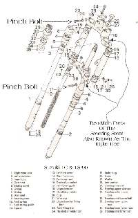
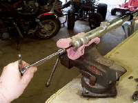
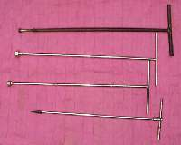
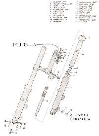
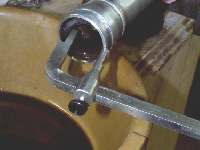
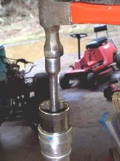
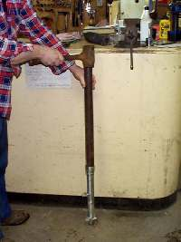

Sooner or later, it will happen. You look down at your front forks and there it is... Oil... leaking... not good. On most bikes it's really not that hard to fix, but before we start there are some things to consider. There are three things that just should not be seen in public. Front Fork Tubes, Rear Chains and my knees. The first two because of dirt and the last one because of ugly. We won't dwell on the last two, but we will consider those tubes.
In the old days when we really did " Live to ride, Ride to live " We didn't bother putting stupid sayings on our points covers, but we did put covers on our fork tubes. They were called Fork Gators or Fork Boots and they kept the dirt out of fork seals and flying rocks from dinging our fork tubes. Now, no one seems to ride much but we got to look trick. So Fork Gaters which worked so well in the past aren't put on anymore. The point is this. If your fork tubes are dinged and rough they will wear out any new fork seals we put in. The cure is new fork tubes. If the forks look OK, and you ride a lot, it might be a good idea to put on some gators.

Now on to the repair. This will cover about 85 % of the forks out there. While there can be a fair number of moving parts lurking inside a fork, they seem to have a very long life... except for the seals. Barring accident damage, seals are what go out first. To replace a seal you must first drain the fork fluid, if possible, and then remove the front wheel, fender, fork brace (if there is one), and, if the brakes are hydralic, the brake calipers. Take a wire or rope or the like and tie the caliper(s) up so it (they) are not hanging from the brake line. Loosen the fork pinch bolts on the top and bottom of the Steering Stem or Triple Tree. On some makes there is no top pinch bolt. The forks are held to the top mount by the same bolt that also keeps the fork spring in. This bolt is under a lot of tension and can pop loose as you unscrew it, hit you in the chin and give you stitches. Yes, indeed it can and don't ask how I know, just be careful, OK?

Once you get the fork off, look at the bottom of the lower fork leg and you will see an allen bolt up inside the end. This has to come out. The trouble is that this bolt has been in there awhile and is screwed into what is called a damper tube. This tube can turn, so it needs to have something to keep it from turning. Most times, the tension from the fork spring will hold it enough that you can unscrew the bolt.
If you took the spring retaining bolt off when you removed the fork leg, put it back on. Sometimes, even with the spring in, the damper rod may still turn. You will have to buy or make a tool to keep the rod from turning. Some of these tools can be bought, or made out of a steel rod and the right sized bolt. A lot of the Kawasakis need a special socket that can fit on the end of a 3/8" extention. I use a 1/2" Air Gun to pop the allen bolt out but, once in a while even that and everything else will not get that allen bolt out. If this happens you will need to drill out the bolt. If you need help in this see the Stuck Bolts Page

If you loosen the allen bolt a few turns, more fork oil may come out. You might want to set it upright in a pan for a while to let it drain. OK, now that we have the allen bolt loose, take the fork spring retaining bolt off. Some forks, like those on a lot of Yamahas, require you to push in on the plug in top of the fork tube and against the spring pressure. Pry the circlip out. Now the spring pressure will push the retainer plug out of the fork tube, so be careful. You can now remove the fork spring and, if you have not already done so, the oil. Take the allen bolt out, and the fork tube should slide right out. Look at the top of the fork leg for the dust cover and gently pry it up with a screw driver. Under it you will find a circlip. There are several different kinds and you may need a special tool to get it out. Sometimes, the tube will come right out very easily. If it does, then the seal probably stayed in the fork leg and you will have to pry it out. You can use a screw driver to pry it out or one of several specially made tools, to pull them out.
If the leg does not want to come out and you have the bolt and circlip out, the problem is a bushing under the fork seal. Push the fork leg in and then pull it out sharply. You may have to do this several times. This will slowly work the seal and bushing out of the fork leg. Clean all the old fluid out of the leg. Slide the old seal off the leg. Cut a very thin piece of plastic, like from a plastic milk jug, and wrap it around the fork tube. Push the new seal over the plastic and then push the plastic down the fork so the plastic protects the seal lips as you push. It helps to lube the seal really good with grease.

You can now drive the seal home and reassemble the fork in reverse order. There are several ways to seat the seal. They make special tools to do it, but they cost a lot of money. I usually just take a socket, turn it around and gently drive it in. If you have to put the the fork and bushing in first, before the seal, things are a bit more fun. The bushings are a semi-tight fit, so you will need to gently and carefully tap the bushing in with a flat punch. Tap at one spot, then shift 180 degrees and tap again. Keep working your way around the bush or seal. Take your time.
You can also use a 24 inch (or so) long piece of tubing, of the right diameter, to drive both the bushing and the seal home. You can get tubing, fairly cheap and in different sizes, at auto driveline repair shops. Just smooth the inner edge with a file and be very careful as you slide it down over the upper fork. You know, come to think of it, schedule 40 ABS plastic pipe might work too. I've never tried it, though. Now refill the fork with the right amount and weight of fork oil and reassemble your front end.
Many newer bikes require the fork oil level to be set too. You use a special tool for this. This tool allows you to suck out any excess oil. Set the gauge to the level specified in the shop manual, stick it into the fully compressed fork tube and use the syringe to suck out any excess oil. Some bikes require the fork tube to be fully extended. Check your shop manual. If you don't have the special tool, one can easily be made out of a length of pipe, some tubing and a chicken baster.
You can stiffen up you fork action with heavier weight fork oil. If your spring has sagged a bit, or you want stiffer springing, you can make a spacer out of a piece of 3/4" CPVC hot water plastic pipe. Just cut it to the length you want and put it on top of the spring, under the top fork bolt.
Click HERE for some exploded views of different Front Forks for you to study. I'll try to add more as time allows.